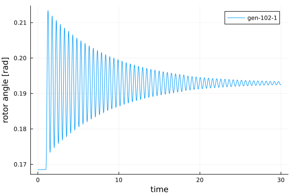

Quick Start Guide
To follow along, you can download this tutorial as a Julia script (.jl) or Jupyter notebook (.ipynb).
The data for these tutorials is provided in PowerSystemCaseBuilder. If you want to build your own case, take a look at the tutorial Creating and Handling Data for Dynamic Simulations
For more details about loading data and adding more dynamic components check the Creating a System with Dynamic devices section of the documentation in PowerSystems.jl.
For a detailed tutorial about this case visit One Machine against Infinite Bus (OMIB) Simulation
Loading data
Data can be loaded from a pss/e raw file and a pss/e dyr file.
using PowerSystems
using PowerSimulationsDynamics
using PowerSystemCaseBuilder
using Sundials
using Plots
omib_sys = build_system(PSIDSystems, "OMIB System")| System | |
| Property | Value |
|---|---|
| Name | |
| Description | |
| System Units Base | SYSTEM_BASE |
| Base Power | 100.0 |
| Base Frequency | 60.0 |
| Num Components | 10 |
| Static Components | |
| Type | Count |
|---|---|
| ACBus | 2 |
| Arc | 1 |
| Area | 1 |
| Line | 2 |
| LoadZone | 1 |
| Source | 1 |
| ThermalStandard | 1 |
| Dynamic Components | |
| Type | Count |
|---|---|
| DynamicGenerator{BaseMachine, SingleMass, AVRFixed, TGFixed, PSSFixed} | 1 |
Define the Simulation
time_span = (0.0, 30.0)
perturbation_trip = BranchTrip(1.0, Line, "BUS 1-BUS 2-i_1")
sim = Simulation!(ResidualModel, omib_sys, pwd(), time_span, perturbation_trip)| Simulation Summary | |
| Property | Value |
|---|---|
| Status | BUILT |
| Simulation Type | Residual Model |
| Initialized? | Yes |
| Multimachine system? | No |
| Time Span | (0.0, 30.0) |
| Number of States | 6 |
| Number of Perturbations | 1 |
Explore initial conditions for the simulation
x0_init = read_initial_conditions(sim)Dict{String, Any} with 5 entries:
"generator-102-1" => Dict(:ω=>1.0, :δ=>0.168525)
"V_R" => Dict(102=>1.03973, 101=>1.05)
"Vm" => Dict(102=>1.04, 101=>1.05)
"θ" => Dict(102=>0.0228958, 101=>0.0)
"V_I" => Dict(102=>0.0238095, 101=>0.0)show_states_initial_value(sim)Voltage Variables
====================
BUS 1
====================
Vm 1.05
θ 0.0
====================
BUS 2
====================
Vm 1.04
θ 0.0229
====================
====================
Differential States
generator-102-1
====================
δ 0.1685
ω 1.0
====================Obtain small signal results for initial conditions
Show eigenvalues for operating point
small_sig = small_signal_analysis(sim)
summary_eigenvalues(small_sig)| Most Associated | Part. Factor | Real Part | Imag. Part | Damping [%] | Freq [Hz] |
|---|---|---|---|---|---|
| Any | Any | Any | Any | Any | Any |
| generator-102-1 δ | 0.5 | -0.15883100381194412 | -13.264252847627334 | 1.197350652434714 | 2.111222750120555 |
| generator-102-1 δ | 0.5 | -0.15883100381194412 | 13.264252847627334 | 1.197350652434714 | 2.111222750120555 |
Execute the simulation
execute!(sim, IDA(); dtmax = 0.02, saveat = 0.02, enable_progress_bar = false)SIMULATION_FINALIZED::BUILD_STATUS = 6Make a plot of the results
results = read_results(sim)
angle = get_state_series(results, ("generator-102-1", :δ));
plot(angle; xlabel = "time", ylabel = "rotor angle [rad]", label = "gen-102-1")